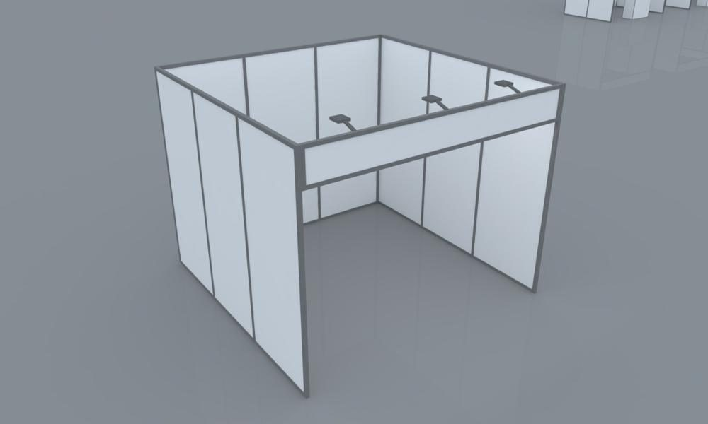

Exhibition Booth Designing: How to Plan a Stall Visitors Actually Enter
A stall is judged in seconds, so design is less about decoration and more about directing attention. This page explains the mechanics, so you can brief a designer, ours or anyone else, with confidence.
What a stall design actually decides
Every stall has three zones: an entry zone that invites, a dwell zone where products or messages hold people, and a conversation point where a staff member can talk. Most weak stalls fail because these collide: a counter blocks the entry, or products sit where nobody can stop without causing a queue.
Good design also ranks its messages. One headline should be readable from the aisle, a second layer reward people who come closer, and detail belongs at hand height. If everything shouts, nothing is heard.
Buildable by design
A beautiful drawing that cannot be built on time is a liability. Our designs are made to be carpenter-friendly, created by certified 3D artists who follow structural engineering best practice, then, where your project calls for it, test-assembled in our workshop before they ship. Because we design and fabricate under one roof, awkward joints and unsupported spans are caught on screen.
A brief that gets better design
- Your goal: leads, launch, meetings or awareness
- One headline message and one hero product
- Stall size, position and the event date
- Logo files and brand colours
- Staff numbers and what they will do at the stall
- Budget range, and any must-haves
What you receive
A layout, 3D renders for your approval, and the build drawings our own workshop uses. We do not cap revisions: we keep refining until you are satisfied, and most designs are finalised within a couple of revisions. Design sign-off is needed at least one week before the event, and larger stalls need far longer. Compare stall types and starting prices.
From our builds




Exhibition booth designing, city by city
The same discipline bends to local conditions. Pick the city where your show is:
- Karachi stall designer: designing for damp coastal air, so edges are sealed and graphics survive transport.
- Lahore booth designer: designing for summer heat and the long approach of a big hall.
- Islamabad booth designer: designing for formal rooms and constant cameras.
- Multan stall designer: designing for attention per rupee and dusty surfaces.
- Customized kiosk manufacturers: designing small units that sell in a few square metres.
Common questions
What does an exhibition stall designer do?
An exhibition stall designer plans the layout, flow, branding and structure of a stall and produces 3D renders for approval. We also build and install what we design, so nothing is lost between drawing and show floor.
What makes an exhibition stall design effective?
Clear entry, a dwell zone where visitors can pause, a conversation point for staff, and a message hierarchy readable at distance, mid-range and close up.
Do I need a 3D design before building?
It is strongly recommended. A 3D render lets you check scale, flow and sightlines before anything is cut.
How many design revisions are included?
We do not cap revisions. We work with you until you are satisfied, and most designs are finalised within a couple of revisions.
How soon before the event must the design be approved?
At least one week before the event, though larger or custom stalls need much more time.
Do you design for kiosks and event setups too?
Yes. We design kiosks, mall standees, ticket counters, booth gates and conference or outdoor event setups.